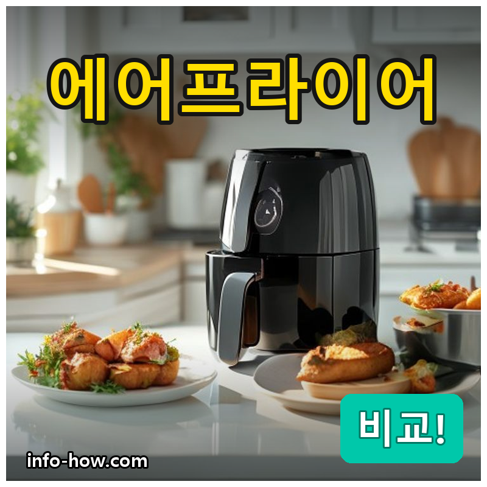
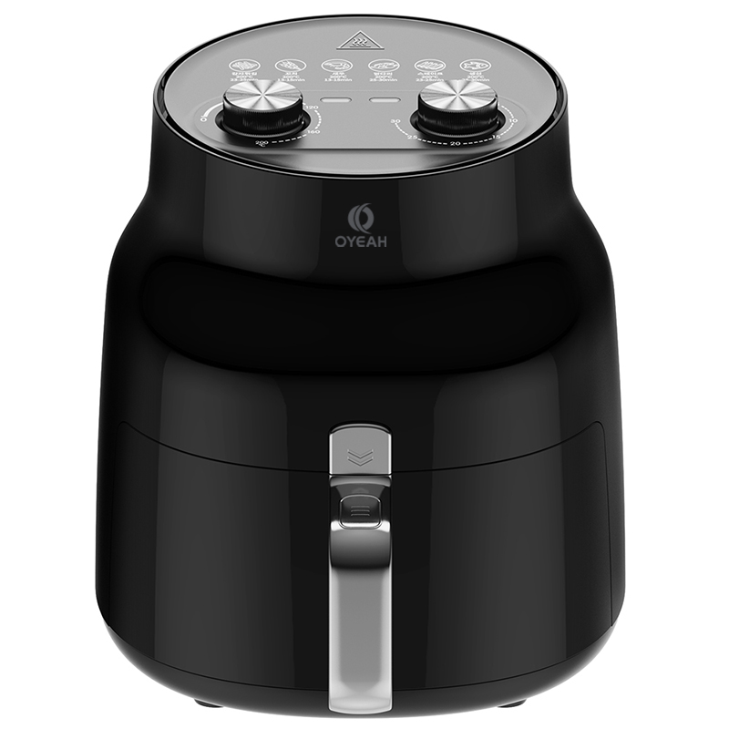
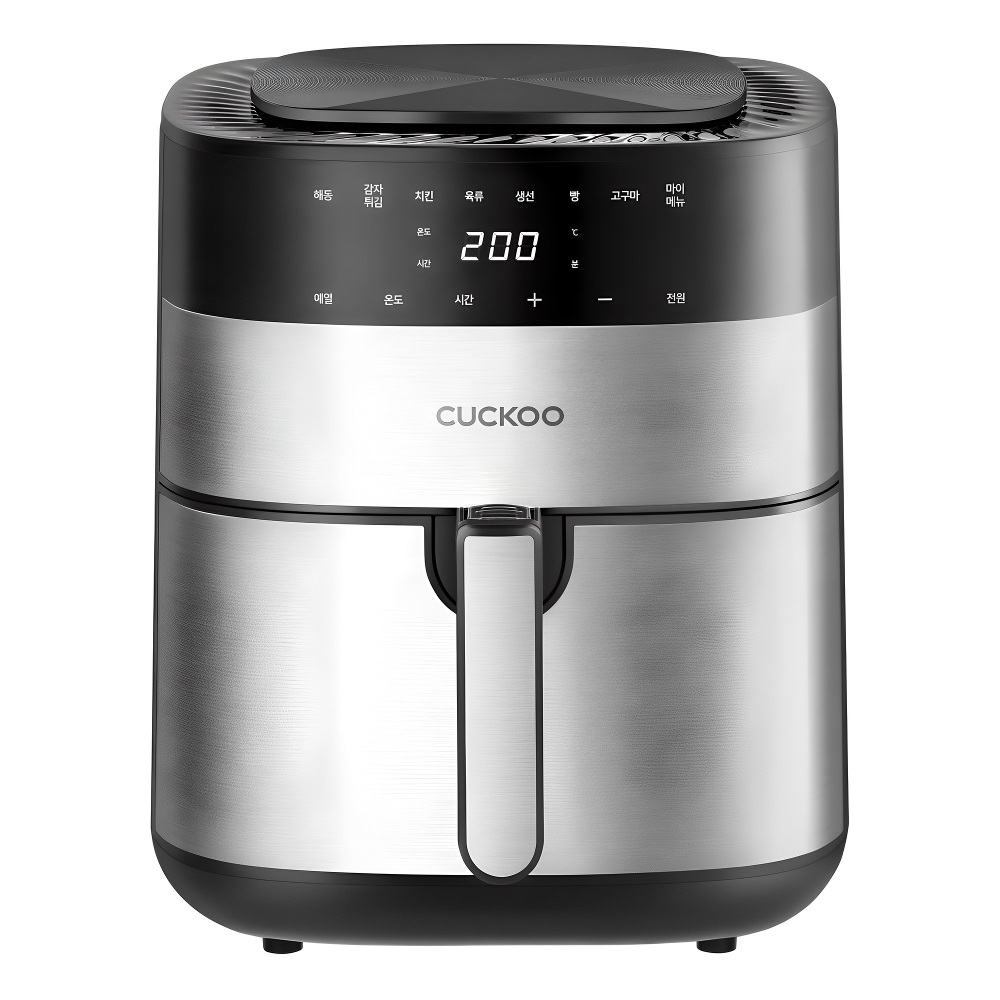
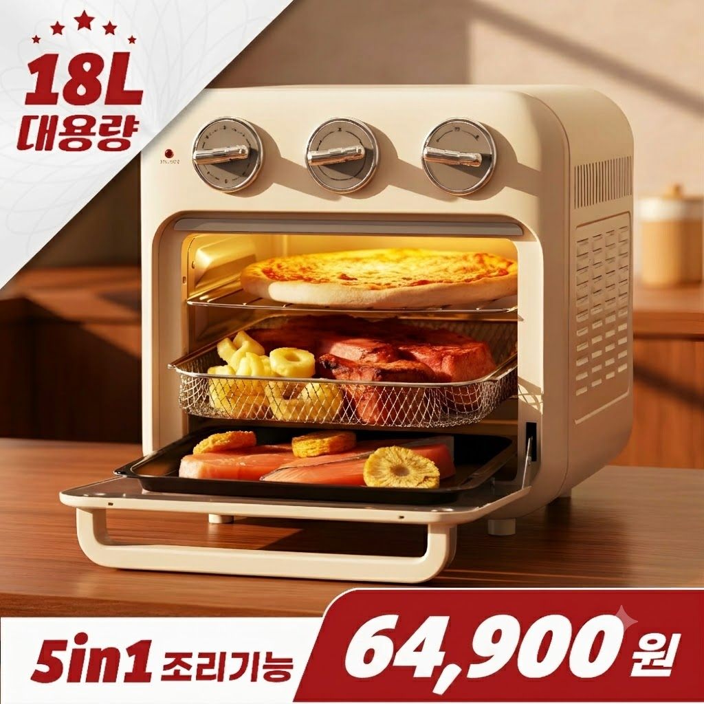

홈 › 제품리뷰 › 주방가전
에어프라이어, 소형이냐 대용량 오븐형이냐
작성: 생활서식 모음 · 2026-07-04

파트너스 활동의 일환으로 일정액의 수수료를 지급받습니다
🛒 오늘의 쿠팡 특가 보러가기 →
에어프라이어, 용량이 너무 다양하죠?
그래서 인원·용도별로 정리했습니다.2026년 에어프라이어 3개
"이 인원이면 이거 사세요"딱 정해드리는 결론 까지 담았으니한 번에 후회 없는 선택 하세요!
📋 목차
에어프라이어, 소형이냐 대용량 오븐형이냐 — 결론 먼저 스펙 비교표: 한눈에 보기 에어프라이어 고를 때 봐야 할 4가지 소형 vs 대용량, 뭐가 맞을까? 자주 묻는 질문 (FAQ) 결론: 한 줄 요약
에어프라이어, 소형이냐 대용량 오븐형이냐 — 결론 먼저
에어프라이어는 혼자 간단히냐, 가족·통구이까지냐 로 갈려요.대용량 오븐형 이면 됩니다. 18L라 한 번에 많이 되고, 작은 거 샀다 답답해서 넘어오는 분이 많거든요.
1 자취·1~2인용 (가성비 초이스)
가성비

1~2인 저소음 소형
1. OYEAH 저소음 에어프라이어 4.5L
저소음 설계로 원룸에도 부담 X 즉시 발열 + 간편 세척 3만원대 1~2인 가성비
자취방 간단 조리에 딱
추천 대상
혼자 살거나 1~2인 가구 냉동식품·간단 안주 위주로 쓸 분 원룸이라 소음·크기가 신경 쓰이는 분 장점
저소음 설계라 원룸·오피스텔에서도 부담 없음 즉시 발열로 예열 기다림이 짧음 바스켓 분리 세척이 간편, 3만원대 가성비 단점
1~2인 간단 조리엔 딱이지만, 가족이 많거나 통구이를 자주 하면 용량이 아쉽습니다. 그런 경우 2번(브랜드 5.5L)이나 3번(오븐형 18L)으로 가세요.
한줄 리뷰
자취·1인 가구가 "일단 하나" 들이기 좋은 입문 에어프라이어입니다. 냉동 감자·만두·치킨텐더 정도면 차고 넘치고, 저소음이라 밤에 돌려도 부담이 적어요. 가족 단위거나 대량조리가 잦으면 처음부터 큰 걸 보세요.
주요 스펙
제품: OYEAH 저소음 에어프라이어 AF-4501 용량: 4.5L (1~2인) 특징: 즉시 발열, 저소음, 간편세척 배송: 로켓배송 가격: 36,800원 (변동 가능) ※ 실제 스펙·가격과 차이가 있을 수 있습니다
2 가정용 메인 (베스트 초이스)
베스트

브랜드 5.5L 가정용
2. 쿠쿠 에어프라이어 5.5L
쿠쿠 브랜드 A/S 안심 5.5L 3~4인 가정 표준 가장 무난한 국민 용량
3~4인 가정 표준 용량
추천 대상
3~4인 가족 표준 가정 오래 쓸 거라 브랜드·A/S가 중요한 분 소형은 작고 오븐형은 부담스러운 분 장점
쿠쿠 브랜드라 A/S·내구성 신뢰도가 높음 5.5L로 4인 가족 한 끼 반찬·냉동식품 커버 소형과 대용량 사이 가장 무난한 국민 용량 단점
일반 가정 조리엔 5.5L가 가장 무난합니다. 다만 통닭·대량 밀프렙을 자주 한다면 3번 오븐형 18L가 더 맞아요. 반대로 1~2인이면 1번으로 아끼세요.
한줄 리뷰
"에어프라이어 = 브랜드 하나 오래 쓰자"는 분들이 정착하는 가정용 표준입니다. 5.5L 용량에 쿠쿠 A/S가 붙어서, 노브랜드 저가가 불안한 분께 안심 선택이에요. 대량조리·통구이가 잦으면 3번, 1~2인이면 1번이 낫습니다.
주요 스펙
제품: 쿠쿠 에어프라이어 5.5L 용량: 5.5L (3~4인 가정) 강점: 브랜드 A/S, 내구성 배송: 로켓배송 가격: 73,010원 (변동 가능) ※ 실제 스펙·가격과 차이가 있을 수 있습니다
3 대가족·통구이 (대용량 초이스)
대용량

통닭 되는 오븐형 18L
3. 눕눕 오븐형 에어프라이어 18L
18L 오븐형 = 통닭도 한 번에 내부가 넓어 여러 단 동시 조리 밀프렙·홈파티 대량조리
통닭·피자·대량조리까지
추천 대상
4인 이상 대가족 통닭·피자·대량 밀프렙을 자주 하는 분 에어프라이어+오븐을 한 대로 합치고 싶은 분 장점
18L 오븐형이라 통닭·피자 등 큰 음식도 통째로 내부가 넓어 여러 단 동시 조리 → 시간 절약 바스켓형보다 눈으로 익힘 정도 확인이 쉬움 단점
용량이 깡패인 대신 자리를 차지합니다. 1~2인이거나 주방이 좁으면 오히려 짐 이니 1번 소형이 맞아요. 4인 이상 + 통구이·대량조리가 잦다면 이만한 게 없습니다.
한줄 리뷰
"에어프라이어인데 사실상 미니 오븐"인 대용량형입니다. 통닭 한 마리, 피자 한 판이 통째로 들어가서 홈파티·대가족한테 활용도가 높아요. 다만 부피가 크니 자리와 인원을 먼저 따져보세요. 소량·자취면 1번이 정답입니다.
주요 스펙
제품: 눕눕 오븐형 에어프라이어 18L 용량: 18L 오븐형 (대가족·통구이) 강점: 통닭·피자 통째 조리, 다단 조리 배송: 로켓배송 가격: 64,900원 (변동 가능) ※ 실제 스펙·가격과 차이가 있을 수 있습니다
스펙 비교표: 한눈에 보기
가격·풍량·무게 중 본인에게 중요한 기준부터 보세요. "최고" 표시는 3제품 중 객관적 1위 값입니다.
← 좌우로 스크롤 →
에어프라이어 고를 때 봐야 할 4가지
용량만 잘 골라도 실패의 절반은 막습니다. 핵심 4가지를 짚어드릴게요.
1) 용량 — 인원 + 1단계가 정답
1~2인: 4~5L (냉동식품·간단 조리)3~4인: 5~6L (한 끼 반찬 커버)4인 이상·통구이: 12~18L 오븐형팁: 애매하면 한 단계 큰 걸 — 작아서 여러 번 돌리는 게 더 번거로움2) 바스켓형 vs 오븐형
바스켓형: 서랍처럼 빼는 형태, 좁은 주방·소량에 적합오븐형: 문 여닫는 형태, 통닭·피자·다단 조리 가능세척: 바스켓형이 분리 세척은 더 간편3) 소음 — 원룸이면 저소음 확인
에어프라이어는 팬이 도는 가전이라 작동음이 있음 원룸·오피스텔·밤 사용이 많으면 저소음 표기 확인 대용량 오븐형은 대체로 소음이 조금 더 큼 4) 세척 편의 — 코팅·식기세척기 여부
바스켓 코팅이 좋아야 기름때가 잘 안 눌어붙음 식기세척기 사용 가능 표기면 관리가 훨씬 편함 오븐형은 내부 트레이·석쇠를 따로 닦아야 함 소형 vs 대용량, 뭐가 맞을까?
인원과 조리 습관이 전부입니다. 이걸 헷갈리면 방치 확률이 높아요.
1~2인·자취: 저소음 소형 → 1번 OYEAH3~4인 표준·브랜드: 5.5L → 2번 쿠쿠대가족·통구이·밀프렙: 오븐형 18L → 3번 눕눕자주 묻는 질문 (FAQ)
Q1. 에어프라이어 용량, 몇 L를 사야 실패 안 하나요? 인원수 + 1단계로 잡으면 대체로 실패가 없습니다. 1~2인은 4~5L, 3~4인은 5~6L, 4인 이상이거나 통닭·피자를 자주 구우면 12~18L 오븐형이 맞습니다. 애매할 땐 한 단계 큰 걸 고르세요. 작아서 두세 번 나눠 돌리는 게 큰 걸로 한 번에 하는 것보다 번거롭고, 큰 용량이라도 소량 조리는 얼마든지 됩니다. 단, 주방 공간이 좁으면 오븐형은 자리를 많이 차지하니 부피도 함께 확인하세요.
Q2. 바스켓형이랑 오븐형, 뭐가 더 좋나요? 용도가 달라 우열보다 선택의 문제입니다. 바스켓형은 서랍처럼 빼는 방식이라 좁은 주방·소량 조리·간편 세척에 강하고, 오븐형은 문을 여닫는 방식이라 통닭·피자처럼 큰 음식과 여러 단 동시 조리에 강합니다. 1~2인 자취면 바스켓형(1·2번), 4인 이상 대량조리·통구이가 잦으면 오븐형(3번)이 맞습니다. 오븐형은 내부가 넓어 익힘 정도를 눈으로 확인하기 좋다는 장점도 있어요.
Q3. 에어프라이어 소음, 밤에 돌려도 되나요? 저소음 모델이면 원룸에서 밤에 써도 무난합니다. 에어프라이어는 뜨거운 바람을 순환시키는 팬이 있어 작동음이 있는데, 저소음 설계 모델(1번 OYEAH)은 원룸·오피스텔에서도 부담이 적습니다. 대용량 오븐형은 팬이 크고 출력이 높아 소음이 조금 더 큰 편이라, 소음이 신경 쓰이고 1~2인이면 저소음 소형을 추천합니다.
Q4. 기름 없이 정말 튀김처럼 되나요? 완전히 같지는 않지만 상당히 비슷하고 훨씬 건강합니다. 에어프라이어는 뜨거운 공기를 빠르게 순환시켜 겉을 바삭하게 만드는 방식이라, 냉동 튀김·감자·치킨은 기름 튀김에 가깝게 나옵니다. 다만 반죽옷이 두꺼운 생재료 튀김은 기름 튀김만큼 바삭하진 않아요. 냉동식품 데우기·재가열, 기름기 빼기에는 오히려 튀김기보다 편하고 뒷정리도 깔끔합니다.
Q5. 지금 사도 되나요? 세일 기다려야 하나요? 에어프라이어는 계절 상품이 아니라 아무 때나 사도 됩니다. 다만 명절·연말에는 요리 수요가 늘어 인기 모델 물량이 빠지기도 해요. 스펙 자체는 성숙 단계라 차세대를 기다릴 실익이 적으니, 필요할 때 로켓배송으로 바로 받는 게 낫습니다. 오래 쓸 생각이면 노브랜드 초저가보다 A/S 되는 브랜드(2번 쿠쿠)가 장기적으로 안심입니다.
결론: 한 줄 요약
1) OYEAH 저소음 4.5L — 36,800원 / 자취·1~2인. 조용하고 저렴한 소형, 간단 조리 입문에 딱.2) 쿠쿠 5.5L — 73,010원 / 3~4인 가정 표준. 브랜드 A/S까지 안심, 가장 무난한 국민 용량.3) 눕눕 오븐형 18L — 64,900원 / 대가족·통구이. 통닭도 한 번에, 사실상 미니 오븐.이 포스팅은 쿠팡 파트너스 활동의 일환으로, 이에 따른 일정액의 수수료를 제공받습니다.